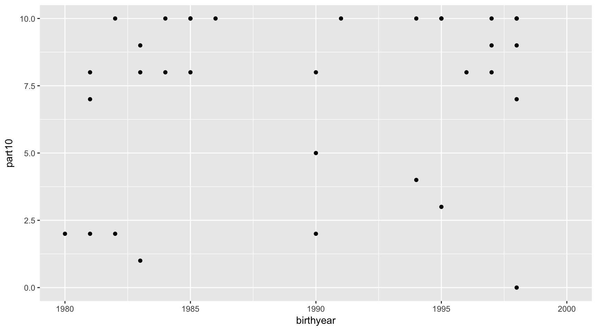
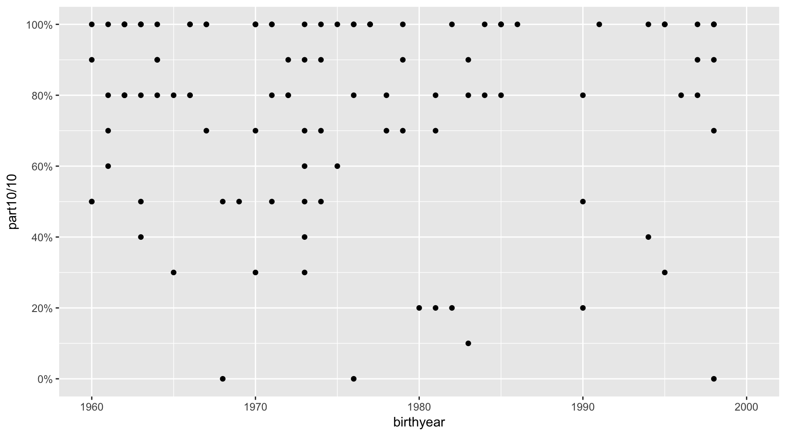
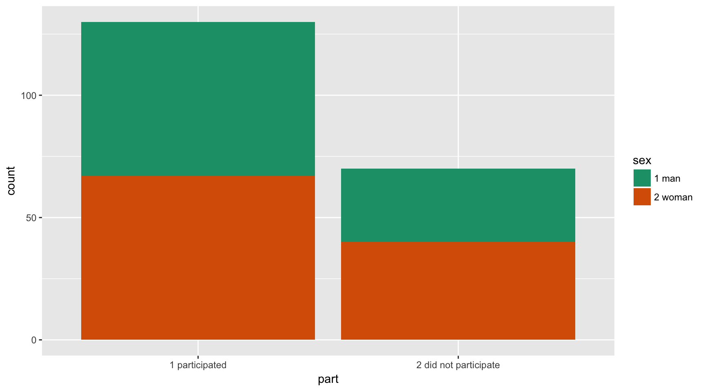
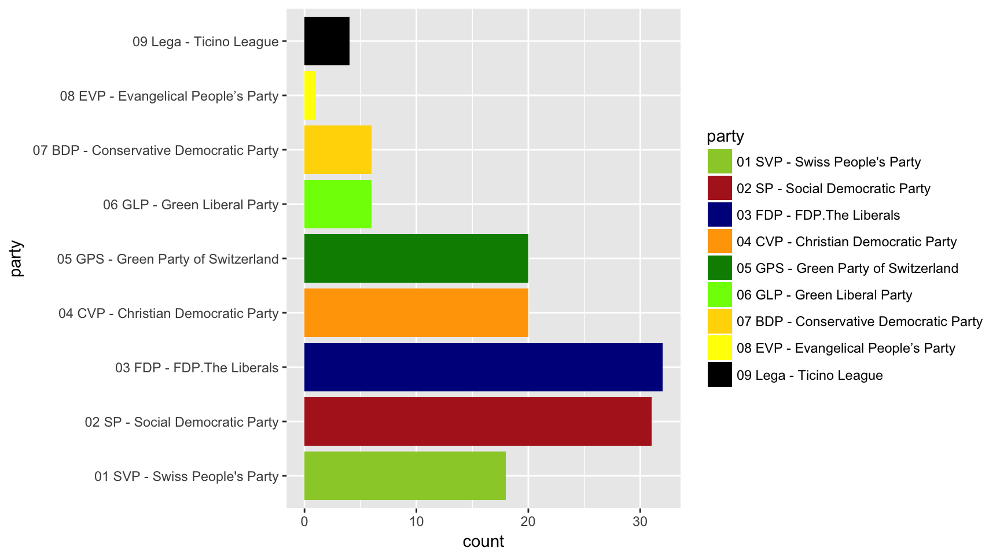
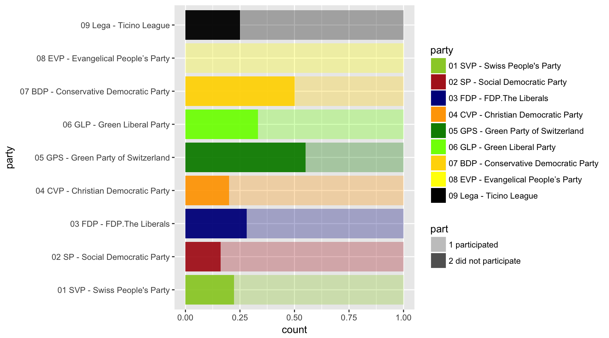
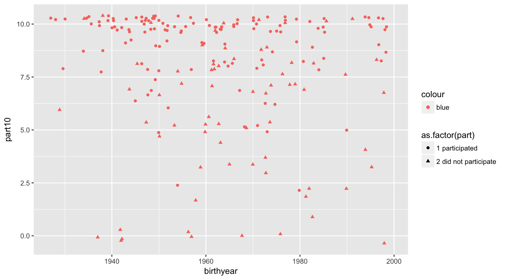
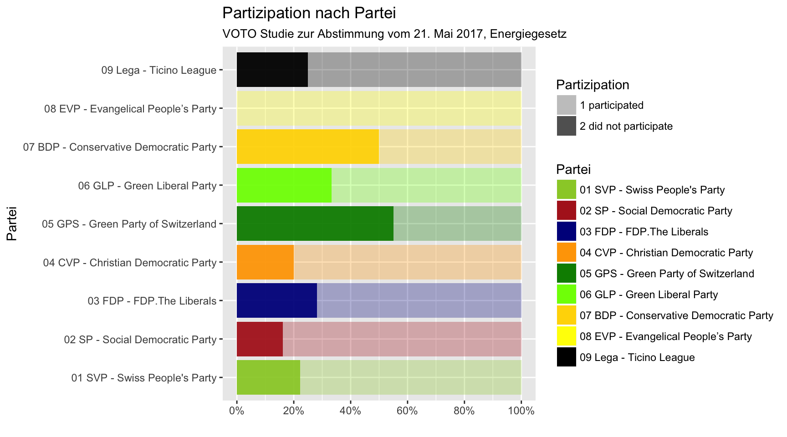
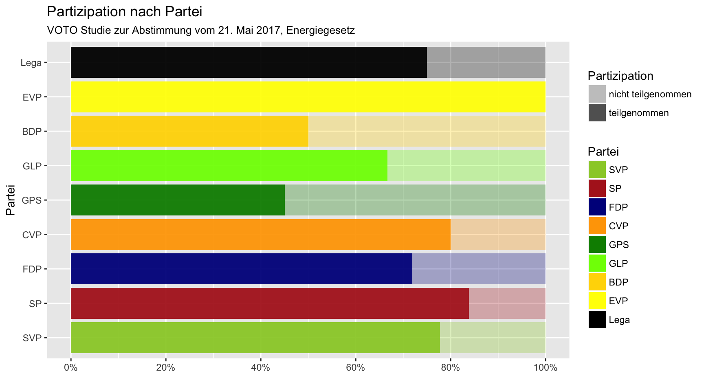
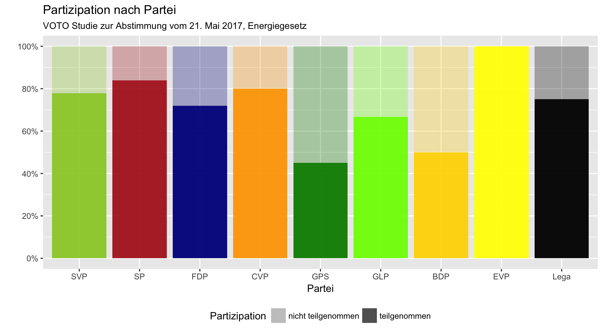
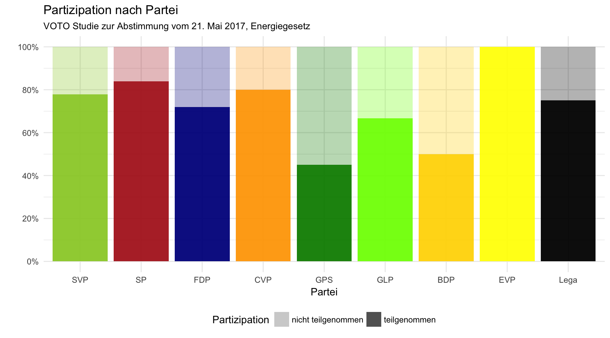

14 Darstellung verfeinern
Obwohl ggplot2 in einem ersten Schritt viele Gestaltungsentscheidungen übernimmt, ist es teilweise nötig und/oder sinnvoll, selbst die Kontrolle über einige Darstellungen zu behalten. Einige wichtige Punkte sollen deshalb hier eingeführt werden.
14.1 Achsen
ggplot2 ermöglicht, die Achsen und deren ‘Limits’ zu definieren, d.h. genau zu entscheiden, wie eine Achse aussehen soll. Aus der Einführung in Design und dem Argument der Ehrlichkeit einer Darstellung ist es sinnvoll, bei der y-Achse keine Trunkierung zu erlauben, da sonst Werte unterschätzt und Veränderungen überschätzt werden können. Der Befehl xlim() (oder auch ylim()) setzt zwei Werte als Grenzen der Skala: beispielsweise explizit auf 0, oder wenn man einen spezifischen Bereich genauer anschauen möchte.
voto$part2[voto$part2=="98 don't know"] <- NA
voto$part10 <- as.numeric(substr(voto$part2, start=1, stop=2))
ggplot(data=voto, aes(x=birthyear, y=part10)) +
geom_point() +
xlim(c(1980,2000))
Soll die y-Achse im Linechart noch genauer kontrolliert werden, kann auf die Skalen zurückgegriffen werden. Beispielsweise der Befehl scale_y_continuous: Im nächsten Plot werden folgende Veränderungen eingeführt:
die Werte werden in Prozente umgewandelt
y=part10/10, die Skala wird in Prozente angepasstlabels=scales::percent_format(),und die Grenzen der y-Achse auf 0 und 1 festgelegt, sowie Beschriftungen in 0.2-Schritten eingefügt (
'seq()liefert in diesem Fall automatischc(0, 0.2, 0.4, 0.6, 0.8, 1)und verhindert so u.a. Tippfehler).
ggplot(data=voto, aes(x=birthyear, y=part10/10)) +
geom_point() +
xlim(c(1960,2000)) +
scale_y_continuous(limits=c(0,1), breaks=seq(0,1,0.2),
labels=scales::percent_format())
Darauf hinzuweisen ist, dass die korrekten Skalen verwendet werden müssen, da sonst ggplot2 die Werte falsch oder gar nicht interpretiert. Insbesondere verwendet werden kontinuierliche Skalen, diskrete Skalen, sowie Datumsskalen.
Allerdings sind Skalen nicht nur für Achsen vorhanden, sondern auch für alle anderen Aesthetics. Insbesondere für Farben können diese sehr sinnvoll verwendet werden.
14.2 Farben
Farben bedeutet in diesem Sinne nicht nur, eine Grafik farbenfroh machen zu können, sondern auch, diese in meist besser publizierbare Grautöne zu halten. Werden somit Farben über fill, color sowie alpha genutzt, können diese per Skala definiert werden.
Ob color oder fill genutzt wird, ist abhängig vom Geom. Objekte mit einer Fläche wie beispielsweise in Balkendiagrammen oder Flächendiagrammen verwenden fill für den Inhalt und color für die Kontur. Die meisten anderen Objekte verwenden color.
Die einfachste Variante, um Farben zu definieren, ist indem eine vordefinierte Palette an Farben genutzt wird. In der nächsten Grafik wird der Befehl scale_fill_brewer() dazu genutzt.
ggplot(data=voto, aes(x=part, fill=sex)) +
geom_bar() +
scale_fill_brewer(palette="Dark2")
Je nachdem welche Palette genutzt wird (siehe ?RColorBrewer) werden unterschiedliche Ziele erfüllt. Auch hier ist es relevant zu unterscheiden, ob kontinuierliche, divergierende oder kategorielle Skalen verwendet werden.
Eine andere Variante als über Paletten ist es, die Farben direkt manuell zu bestimmen – wenn explizit definierte Farben verwendet werden sollen, welche eine gewisse Bedeutung haben (wie zum Beispiel Ja/Nein, Parteifarben, etc.). In dem Fall können Farben per scale_fill_manual() definiert werden.
voto.party <- filter(voto, party<="10")
ggplot(data=voto.party, aes(x=party, fill=party)) +
geom_bar(position= "identity") +
scale_fill_manual(values = c("yellowgreen","firebrick",
"darkblue","orange",
"green4","lawngreen",
"gold","yellow","black")) +
coord_flip() # Um die Labels besser zu sehen wird die Grafik gedreht
Eine weitere Möglichkeit mit Farben zu arbeiten ist per Transparenz. Mit alpha lässt sich definieren, wie die Deckungskraft eines Objekts ist. Transparenz bietet sich beispielsweise bei Scatterplots mit vielen Beobachtungen als Alternative (oder Ergänzung) zu geom_jitter an – an Orten mit vielen Punkten wird die höhere Dichte an Beobachtungen auch durch stärkere Farben gesehen, da sich die Punkte überlappen, während einzelne Punkte weniger herausstechen. Ähnlich kann bei vielen Linien mit Transparenz gearbeitet werden.
Nicht zuletzt kann alpha auch aus Designgründen gesetzt werden. Wichtig ist dabei, dass alpha nicht dazu genutzt werden sollte, Grafiken ‘unlesbar’ zu machen, da die Objekte nicht mehr vollständig sichtbar sind.
ggplot(data=voto.party, aes(x=party, fill=party, alpha=part)) +
geom_bar(position= "fill") +
coord_flip() +
scale_fill_manual(values =
c("yellowgreen","firebrick","darkblue","orange",
"green4","lawngreen","gold","yellow","black")) +
scale_alpha_manual(values=c(0.3, 0.95))
14.3 Marker- und Linientypen
Ähnlich wie Farben können wir auch Darstellungsformen anpassen, d.h. das Aussehen von Punkten (shape) und Linien (linetype). Grundsätzlich gibt es hier zwei verschiedene Varianten, entweder indem eine Form fix definiert wird, oder indem eine Form als Aesthetic gesetzt wird, was zu unterschiedlichen Resultaten führt.
ggplot(data=voto, aes(x=birthyear, y=part10,
shape=as.factor(part),
color="blue")) +
geom_jitter()
Wird mit einer Aesthetic (aes(color=as.factor(part))) gearbeitet, dann gibt es pro Kategorie/Gruppe eine andere Darstellung. Wird derselbe Befehl ausserhalb der aes() gesetzt, wird fix eine Variante gesetzt, beispielsweise mit aes(), color="blue". Je nachdem welches Ziel verfolgt werden soll, sind beide Befehle sinnvoll verwendbar.
Weitere Informationen zu Shape und Linetype mit einer Übersicht der unterschiedlichen Formen.
Sowohl für Farben wie auch für Markertypen und Linien gibt es sinnvollere und weniger sinnvollere Verwendungen. Noah Iliinsky hat eine kurze Übersicht zusammengestellt: Properties and Best Uses of Visual Encoding.
14.4 Beschriftungen
Neben der Darstellung selbst können die Informationen auf einer Grafik ebenfalls per Text eingefügt werden. Insbesondere wenn Plots mehr oder weniger alleine stehen ist es notwendig, genügend Informationen mitzuliefern, damit die lesende Person auch ohne Begleittext die Grafik nachvollziehen kann (-> Zugänglichkeit von Visualisierungen).
Punkte, die eine Grafik begleiten sollten sind:
Titel: Was wird in der Grafik gezeigt, für was stehen x- und y-Achse?
Legende: Wie sind Farbe, Marker und Liniendicke zu decodieren?
Lesehinweise bei unbekannteren Grafiken: Wie muss ich die Punkte, Linien und Strukturen interpretieren?
Notiz zur weitergehenden Beschreibung: Habe ich Anpassungen an den Daten gemacht, welche bei der Interpretation berücksichtigt werden müssen, z.B. Outlier ausgeschlossen, Werte transformiert, etc.?
Während die zwei ersten Punkte in jeder Grafik integriert werden sollten, können die zwei letzten Punkte auch im begleitenden Text erst hinzugefügt werden.
Jede Grafik sollte über ein Titel verfügen. Je nach Gestaltung kann dieser zwar Teil der Beschriftung einer Grafik sein (im Sinne von ‘Grafik 1: Titel in Fett. Kommentar in normaler Schrift’), trotzdem ist es für eine schnelle Auffassung der Hauptaussage einer Grafik sinnvoll, einen Titel zu verwenden, der Teil der Grafik ist.
Unabdingbar ist eine Beschriftung der Achsen, wobei es empfehlenswert ist, keine Variablennamen zu verwenden (allgemein ist es verständlicher, wenn im finalen Text nicht mit Codes à la logprctwrkagekat gearbeitet wird, sondern mit Klarnamen). Im nächsten Beispiel wird der labs()-Befehl eingeführt.
ggplot(data=voto.party, aes(x=party, fill=party, alpha=part)) +
geom_bar(position= "fill") +
coord_flip() +
scale_fill_manual(values = c("yellowgreen","firebrick","darkblue","orange",
"green4","lawngreen","gold","yellow","black")) +
scale_alpha_manual(values=c(0.3, 0.95)) +
scale_y_continuous(limits=c(0,1), breaks=seq(0,1,0.2),
labels=scales::percent_format()) +
labs(title="Partizipation nach Partei",
subtitle="VOTO Studie zur Abstimmung vom 21. Mai 2017, Energiegesetz",
x="Partei", y="",
fill="Partei",
alpha="Partizipation")
Unschön in dieser Grafik ist jetzt noch, dass die Labels, die in den Daten drin sind, nicht wirklich gesäubert sind. Wir haben hier zwei Möglichkeiten, die Beschriftung der einzelnen Balken und der Legenden anzupassen: entweder, wir verändern die zu Grunde liegenden Daten und recodieren die einzelnen Variablen (was insbesondere sinnvoll ist, wenn wir dieselben Daten für verschiedene Grafiken verwenden). Oder, wenn wir die Daten in ihrem ursprünglichen Format behalten wollen, direkt für die Grafik ändern, indem wir die Skalenlabels definieren. Zusätzlich ist die Anordnung in der Variable part “verkehrt”, sodass wir diese ab sofort jeweils automatisch umkehren mit forcats::fct_rev(part).
ggplot(data=voto.party, aes(x=party, fill=party, alpha=forcats::fct_rev(part))) +
geom_bar(position= "fill") +
coord_flip() +
scale_x_discrete(labels=c("SVP", "SP", "FDP", "CVP", "GPS",
"GLP", "BDP", "EVP", "Lega")) +
scale_fill_manual(values = c("yellowgreen","firebrick","darkblue","orange",
"green4","lawngreen","gold","yellow","black"),
labels=c("SVP", "SP", "FDP", "CVP", "GPS",
"GLP", "BDP", "EVP", "Lega")) +
scale_alpha_manual(values=c(0.3, 0.95),
labels=c("nicht teilgenommen", "teilgenommen")) +
scale_y_continuous(limits=c(0,1), breaks=seq(0,1,0.2),
labels=scales::percent_format()) +
labs(title="Partizipation nach Partei",
subtitle="VOTO Studie zur Abstimmung vom 21. Mai 2017, Energiegesetz",
x="Partei", y="",
fill="Partei",
alpha="Partizipation")
Der Einfachheit halber können wir die Legende für die Farbe aber auch ausschalten (guides(fill="none")), da die Balken in diesem Fall ja beschriftet sind. Mit den gekürzten Labels können wir theoretisch auch wieder zur ungedrehten Variante der Grafik wechseln (ohne coord_flip()). Zusätzlich soll die Partizipationslegende an einem anderen Ort kommen (theme(legend.position="bottom").
ggplot(data=voto.party, aes(x=party, fill=party, alpha=forcats::fct_rev(part))) +
geom_bar(position= "fill") +
scale_x_discrete(labels=c("SVP", "SP", "FDP", "CVP", "GPS",
"GLP", "BDP", "EVP", "Lega")) +
scale_fill_manual(values = c("yellowgreen","firebrick","darkblue","orange",
"green4","lawngreen","gold","yellow","black")) +
scale_alpha_manual(values=c(0.3, 0.95),
labels=c("nicht teilgenommen", "teilgenommen")) +
scale_y_continuous(limits=c(0,1), breaks=seq(0,1,0.2),
labels=scales::percent_format()) +
labs(title="Partizipation nach Partei",
subtitle="VOTO Studie zur Abstimmung vom 21. Mai 2017, Energiegesetz",
x="Partei", y="",
fill="Partei",
alpha="Partizipation") +
guides(fill="none") +
theme(legend.position="bottom")
14.5 Themen
Letztens, ggplot2 bietet die Möglichkeit, mit vordefinierten Themen den Grundaufbau anzupassen, d.h., Farbschemas, Hintergründe, Schriftarten etc. anzupassen. Ein Beispiel ist theme_minimal(), das den unschönen grauen Hintergrund entfernt:
ggplot(data=voto.party, aes(x=party, fill=party, alpha=forcats::fct_rev(part))) +
geom_bar(position= "fill") +
scale_x_discrete(labels=c("SVP", "SP", "FDP", "CVP", "GPS",
"GLP", "BDP", "EVP", "Lega")) +
scale_fill_manual(values = c("yellowgreen","firebrick","darkblue","orange",
"green4","lawngreen","gold","yellow","black")) +
scale_alpha_manual(values=c(0.3, 0.95),
labels=c("nicht teilgenommen", "teilgenommen")) +
scale_y_continuous(limits=c(0,1), breaks=seq(0,1,0.2),
labels=scales::percent_format()) +
labs(title="Partizipation nach Partei",
subtitle="VOTO Studie zur Abstimmung vom 21. Mai 2017, Energiegesetz",
x="Partei", y="",
fill="Partei",
alpha="Partizipation") +
guides(fill="none") +
theme_minimal() +
theme(legend.position="bottom")
Mehr zu Themas findet sich auf der Webseite des Tidyversums.
Erstelle eine Grafik und finalisiere diese, indem du auf Text, Farbe, etc. achtest. Führe anschliessend in Lauftextform (keine Stichwörter) aus, was in dieser Grafik zu lesen ist, und wie diese zu interpretieren ist.
Es bietet sich an, mit dem Resultat der ersten Übung weiter zu arbeiten.